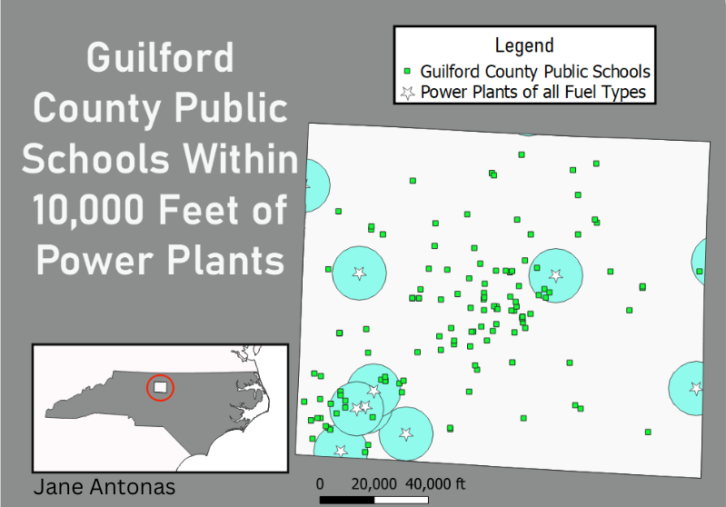

Homework 8: Geoprocessing Analysis
Data used for this project:
Global Powerplant Database
County Cartographic Boundaries
NC Public Schools
Edited Datasets
Cleaned Power Plant Data (CSV)
Map

Using data from the World Resources Institute, I endeavored to answer the question, "How many Guilford County schools are located within 10,000 feet of a power plant?" To transform US County data into something useful for this map, I used the dissolve function twice. First to dissolve all counties except those in NC, then to dissolve all NC counties except for Guilford. I did this in two different steps so that NC could be represented as a different color on the inset. Next, I used the buffer function to create a buffer of 10,000 feet around each power plant point. Then, school points that fall within these buffers help to answer my initial question.